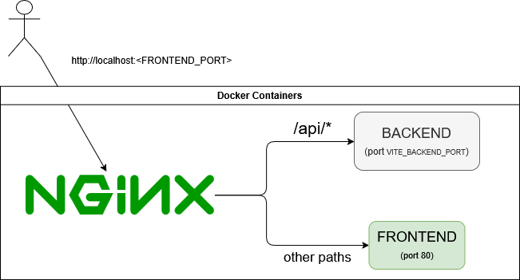

Installation
SignAlchemist uses Docker containers to simplify the installation and deployment process.
Environment Variables
Edit the environment variables file with:
nano .env
Example configuration:
VITE_BACKEND_PORT= # Port where the backend server will run
FRONTEND_PORT= # Port where the frontend will be accessible
PYTHON_ENABLED= # Enable Python scripting support (true/false)
Three environment files are used depending on the context:
.env: Default. Used only when neither .env.dev nor .env.prod are provided.
.env.dev: Used for the development build.
.env.prod: Used for the production build (Python scripting disabled).
Development Mode
To start the application in development mode, run:
docker compose -f docker-compose.dev.yml --env-file .env.dev up --build
This will:
Build and run the containers in development configuration.
Use the settings from .env.dev.
Important: Don’t forget the –env-file flag to load the correct environment variables.
Once the containers are running, you don’t need to do anything else to access the application and its API — both will be available on the ports specified in the environment variables.
It’s also important to note that these ports are not only used in the docker-compose.yml files but also in the vite.config.js configuration:
server: {
watch: {
usePolling: true,
},
host: true,
strictPort: true,
port: parseInt(process.env.FRONTEND_PORT || '5173'),
proxy: {
'/api': {
target: `http://backend:${process.env.VITE_BACKEND_PORT || '8000'}`,
changeOrigin: true,
rewrite: path => path.replace(/^\/api/, ''),
},
},
}
The proxy section is essential during development. It ensures that any request to /api from the frontend is forwarded to the backend container. The rewrite function strips the /api prefix from the URL path before forwarding the request to the backend.
Production Mode
To launch the application in production mode, use:
docker compose -f docker-compose.prod.yml --env-file .env.prod up --build -d
This will:
Run the app in detached mode (-d)
Use .env.prod as the configuration
Note: In production mode, Python scripting must be disabled for security reasons.
Production Architecture
In production, the application is composed of three containers:
backend – Runs the Python API using Uvicorn.
frontend – Serves the built static frontend files.
nginx – Acts as the single public entrypoint, routing all incoming traffic.
Port Behavior
VITE_BACKEND_PORTspecifies the internal port used by the backend container.FRONTEND_PORTis the host port that maps to Nginx — this is the only port exposed to the outside world.The frontend container listens on port 80 internally and is only accessed by Nginx.
So, when a user accesses the application via http://localhost:<FRONTEND_PORT> (whatever domain/IP), the request is actually handled by the Nginx container.
Nginx Routing Logic
Nginx forwards requests based on their path:
server {
listen 80;
location /api/ {
proxy_pass http://backend:8000/;
proxy_http_version 1.1;
proxy_set_header Upgrade $http_upgrade;
proxy_set_header Connection 'upgrade';
proxy_set_header Host $host;
proxy_cache_bypass $http_upgrade;
}
location / {
proxy_pass http://frontend:80;
}
}
{kind=link}

Requests to /api/ are forwarded to the backend container.
All other requests (such as
/aboutor/filtering) are routed to the frontend container.
Important
The value in proxy_pass http://backend:8000/; must match the backend port (VITE_BACKEND_PORT) defined in .env.prod. If you change VITE_BACKEND_PORT, you must update this Nginx config manually.
It is up to the user to set up an additional reverse proxy on the host machine if needed. For example, route example.com to its localhost:<FRONTEND_PORT>.